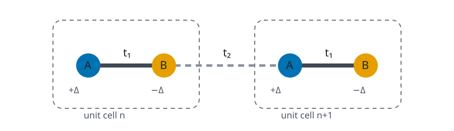

Rice-Mele Model
Purpose and structure
The Rice-Mele chain extends SSH with alternating hoppings and staggered onsite energies:
$$ t_{\rm intra}=t+\delta,\qquad t_{\rm inter}=t-\delta, $$
with onsite values $+\Delta$ on $A$ and $-\Delta$ on $B$.

Basis and use
The single-particle dimension is $2N_c$.
from quantum_lattice_models import rice_mele_model
H = rice_mele_model(
n_cells=10, hopping=1.0, dimerization=0.25, staggering=0.5
)
Parameters
| Builder | Parameter | Type | Default | Constraint |
|---|---|---|---|---|
rice_mele_model |
n_cells |
int |
8 |
>= 1 |
rice_mele_model |
hopping |
float |
1.0 |
|
rice_mele_model |
dimerization |
float |
0.25 |
|
rice_mele_model |
staggering |
float |
0.5 |
|
rice_mele_model |
periodic |
bool |
False |
User notes
Nonzero staggering breaks the SSH sublattice symmetry and generally shifts edge-state energies away from zero.